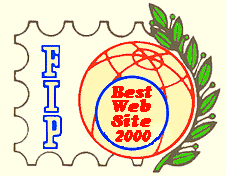
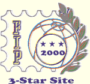
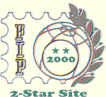
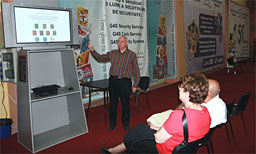
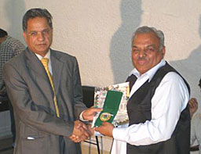
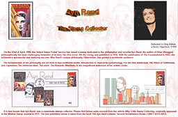

|
|
A No Nonsense Contribution to the
EVALUATION OF PHILATELIC WEBSITES
By Victor Manta, PWO, AIJP
Summary
Based on his long experience in stamp collecting, and a considerable one in the creation of philatelic web pages, the author deals with the evolution of philatelic websites and takes a no nonsense approach to their evaluation.
About the author
For over fifty years Victor Manta, the author of this article, collects postal stamps. He is a former member of Romanian and Swiss philatelic associations, and he is member of the International Association of the Philatelic Journalists and Authors (AIJP). Its Arts on Stamps, the PWO and the Romania as Seen through its Stamps sites were internationally awarded, among others by the International Philatelic Association (FIP). Starting by 1999, he participated in quite all philatelic websites competitions worldwide he was aware of.
Victor Manta is the founder and the current president of the Philatelic Webmasters Organization (PWO), that counts 390 members worldwide. On behalf of the PWO, Victor Manta organized one of the events at the World Philatelic Exhibition EFIRO 2008. He is also very present in the fight against the illegal stamps issues.
Introduction
The main goal of this article is the willingness of the author to share his experience and his thoughts with the creators of philatelic websites (named in what follows Philatelic Webmasters - PW) and with those who will judge the future websites competitions. His purpose is not to create rules but to raise awareness to what philatelic webmasters are, what leads them to do what they do and, accordingly, how to fairly evaluate their work.
The Beginning of Philatelic Webmastering
The first web pages dedicated to stamp collecting appeared around 1995, when some stamp collectors started to realize the big advantages of the Web publishing for their hobby. The first attempts were made with some scanned images (usually bad, due to technological limitations) of stamps from webmasters own collections, accompanied by a few lines of text.
This was quickly followed by more elaborated websites, very often dedicated to popular topics. The quality of images increased, following the speed increases of the Internet, and the texts become lengthier, being often taken, with or without references, from encyclopedias and similar sources. At a certain time the output increased so much that some philatelic newsgroups limited the number of pages that could be announced on them.
The FIP Philatelic Sites Evaluations
(a short return to an already distant past)The spontaneous and explosive grows of philatelic webmastering was noticed by the FIP leaders and they decided to catch up with this new activity that speeded up. Thanks to the initiative and the contribution of Charles J. Peterson, the (meanwhile defunct) President of the FIP philatelic literature commission, the FIP started in 1999 what was announced as an annual evaluation of philatelic sites.

May I recommend to those of the readers who aren't informed about the role of the FIP Literature Commission in the FIP Websites competition, about its positive but also too often negative contributions, to visit the following pages published in the past on the PWO website:
FIP Awards 2000 FIP Awards 2002 FIP Awards 2002 Answer FIP Awards 2003
The reading of these pages gives a hot impression of what experienced the participants in these per se useful competitions. I note in passing that the PWO was created during these competitions, in order to represent worldwide the interests of philatelic webmasters and to give them the opportunity to express themselves.
A central question asked by one of the participants in Evaluations was: Under the circumstances webmasters can live without FIP, but can FIP live without the webmasters and webmastering -- the modern way of displaying and exhibiting internationally? Well, as the past experience proves, unfortunately, not only it was possible, but it became a fact of life, because during the last ten years at the FIP level it happened nothing in what concerns the philatelic websites, their evolution and their competitions. On the other hand quite everyone in the organized philately paradoxically complains about the freefall of number of stamp collectors enrolled in associations and aging of remaining members.

Please find listed below just some complains from the participants in the past FIP websites competitions. I publish them only to help future judges to learn from the past errors of others and not from the own, which can be a more painful process.
- Lack of reliability in reading and understanding by the jury of the submitted pages
- The fact that the jury often overlooked important features, like databases and clubs
- Long delays and even generalized failures to deliver the so-called " Critiques", about which we found out later that in 2002 they were simply lost, which raised the legitimate question about how the sites could be evaluated without them
- The same names sometimes appeared as competitors (finally always very well ranked) and another time as jurors
- The lack of transparency and of proper communication. For example The Evaluation Scheme, used by the Evaluators, was not made known to the participants, being published much later here

The Sad End of the FIP Philatelic Sites Evaluations
After four editions, each of them recording an impressive number of participants, in 2003 the organizers abruptly cancelled the Evaluation, this after having launched it in full. In the same time they announced that: It is anticipated that, after further study, these evaluations may be resumed in 2004. Link
Nothing was ever resumed, either in 2004 or even nine years later. As it is ruled out by the actual document: Special Regulations for the Evaluation of Philatelic Literature Exhibits at F.I.P. Exhibitions (Link), under Art. 3: Principles of Exhibit Composition (read as What is Accepted as Exhibit) every good old thing is listed but not the presentation of Philatelic Literature Exhibits on modern Digital Media (like CD, DVD, BR, Internet).
The reasons mostly invoked by the FIP about why it doesn't accept the presentations on Digital Media anymore, and which is nothing short of a post-factum rationalization of its previous failures, is that the websites became too big to be judged, and that they are changing too often. This may suggest that exhibits that are accepted by the FIP (in accordance with the document Special Regulations, mentioned above), like:
"1. f. Specialised catalogues which besides philatelic issues of one or more countries treat varieties, cancellations or other specialized aspects." or:
"3. Philatelic journals and newspapers"should in their turn be very limited in size and that they should not change, which obviously doesn't make much sense.
The Presentation of Philatelic Webpages at EFIRO 2008
The Philatelic Webmasters Organization (PWO), in collaboration with the AIJP and the OC, has organized at the World Philatelic Exhibition EFIRO 2008 (Bucharest, Romania, 20 - 28 June) a presentation of excerpts from worldwide philatelic websites, devoted to Romanian philately. The webmasters of the most important sites were contacted by the PWO and they kindly accepted to participate in this important philatelic event, dedicated to the 150th anniversary of the creation of the first Romanian stamps, the famous Bull Heads. This action filled somehow the gap that remained opened after the end of the FIP websites competitions.
The presentation took place at one of the best locations at EFIRO 2008, in the vicinity of the Court of Honor and of the Philatelic Museum, on a surface of 45 m2. The participating web pages could deal with any chapter of the rich Romanian philately. They contained scanned images of philatelic material, explanatory text and captions. The accepted languages for the text and captions were in English, French, German and Romanian. Participation was free of charge. It was not required that the participants be members of any specific philatelic organizations.
This presentation can be found here on the Web. The impressions and lessons related to its conception, implementation and presentation are published on my Romania as Seen through its Stamps site, on the following page .

Here are the closing words of the article:
All in all, it was an interesting, even if a tiring, experience. The PWO could demonstrate this way what can practically do just a single person, with some IT skill, and with the contribution of interested stamp collectors and philatelic webmasters, members of the PWO. Due to a relatively short collaboration with AIJP, and thanks to the resulted goodwill of the local OC, I was able to organize an event, and to present in a world class philatelic show an exhibit that popularized the spontaneous movement of philatelic webmasters, a movement that is totally ignored by the FIP since 2002, the year of its last web sites competition. Hopefully, one day this will change!
Philatelic Website Awarded in Pakistan in 2009
As far as we know, for the first time in the history of philately a website, Pakistan Philately, was submitted in the literature section of a national philatelic exhibition. The website was presented on a CD. The jury examined the website that consisted of a Catalogue of Pakistan Postage Stamps from 1947 to March 2009, News & Articles on Pakistan Philately, a List of Philatelic Literature & Associations, a Philatelists Directory and more. The website was accepted by the organizers and it was awarded a Vermeil Medal.

The author of the website, Akhtar ul Islam Siddiqui, is member of the PWO. One can find out more about this event by following the link: http://www.pwmo.org/Awarded-Member/Pakistan-philately.htm
What Makes the Philatelic Webpages so Interesting
(and makes them worthwhile for being judged and eventually rewarded)Instead of theorizing, I prefer to present the example of a page that I created in 1999 and updated in 2008. It is dedicated to a stamp, issued in 1999 by the United States Postal Service, which honors the American philosopher and writer Ayn Rand (Link)

I took as example this very page because it is one of the most popular ones of my Art on Stamps site. There are several reasons which, I suppose, make this page to be visited more often:
- The popularity in the USA and worldwide of the person that is honored on the stamp
- The accompanying text, that informs the reader about a less known fact, that Ayn Rand was a passionate stamp collector
- The short excerpts from her little circulated article about her passion of stamp collecting
- The fact that the page is richly illustrated (with some little help of my friends), by using the stamp itself and images of FDCs with their interesting cachets
- Because it is providing information about the designer of the stamp and an excerpt of my e-mail conversation with him
- The brief mentioning of my objectivist friend, who (waiting for a liver that never came) left for me a sheet of Ayn Rand stamps.
I can imagine that all this not only interests the visitors of the mentioned page, but would not leave indifferent the stone hearts of websites exhibitions' judges either :-)
A Foreword to IPHLA 2012 and to its Regulations
We at PWO see the IPHLA 2012 as a very important step on the way to restoration of the reputation lost by the official philatelic instances during the last ten years passed since the sad end of the FIP philatelic sites evaluations.
New regulations were developed for IPHLA 2012, probably starting from scratch. They can be found here .
The creators do not seem to have collaborated with those who have some experience in the field and certainly they have not worked together with the PWO. This makes the results look sometimes like what is called in German Kopfgeburt, the term standing for a purely intellectual creation, somehow disconnected from reality. We give below some examples from the Regulations, which we comment briefly :
"3. Groups within the literature competitive class
Group 3 : Interactive electronic media (the Internet, websites)
Group 3A: Websites with representations of philatelic and postal history research.
Group 3B: Websites, which serve to promote philately and deal with organizational matters in the field of philately and postal history, their object being documentation." (Emphasis added)This limitations practically exclude from participation 95% of philatelic websites. Fortunately, these selection rules won't be strictly applied at IPHLA 2012.
"7.1.1 Style and linguistic accuracy 10 points"
The regulations should promote the usage of languages of large circulation, which is typical for the Internet. A webpage can be perfectly written in Romansh (one of the four national languages of Switzerland ) but it is of lesser interest than the same one written in a less elaborated English, which is the main language used on Internet (and not only on it, another example being the science & technology), like it or not.
"7.1.2 Philatelic importance of the subject 10 points"
For this article the creators should publish a ranking of philatelic subjects. Because this is obviously hopeless, due to the diverging opinions on the subject, this article should better disappear in the future.
"Guidelines for judging literature exhibits
4.4 Websites (Internet)
Websites should inspire curiosity in the user with an attractively designed portal page."A portal is a site that the owner positions as an entrance to other sites on the internet. Probable the authors mean here the homepage, which is usually the first page of a site.
"This page must also give an overview of the available contents (buttons) clearly indicating the subject being discussed."
The buttons are elements that are not necessarily related to the contents of a site, and vice-versa. The subject of a page should at best appear in its title (on the page itself and in its code).
"Graphic elements such as illustrations, diagrams, facsimiles and scans should be of high quality and be appropriately arranged for the viewer."
For download speed reasons, and sometimes for copyright ones, the usage of high quality (read high resolution) scans should be used sparingly.
"It is advantageous if pictures are first shown as thumbnails which can be enlarged."
Very often the contrary is advantageous, for example when a properly sized image is important for the understanding of the subject.
"Interactive features should, if meaningfully and technically feasible, be present. The possibility for dialogue with the reader/user regarding supplementing the content or commenting on contributions will have a positive effect."
For spamming reasons a good solution for a webmaster is to receive the comments, etc., by e-mail and to publish them selectively. This is especially advisable for larger sites, where it is difficult to check often every page. Another very useful source of comments is through the philatelic newsgroups and forums, an activity that should be encouraged by the judges of websites.
General Considerations
There are many supplementary elements to consider, such as the clarity and visibility of texts and menus, the ease of navigation (e.g. no need to use the Back button of the browser ), the presence of free databases (searchable online and/or downloadable), the creation of fan / member clubs, information about how known is the author, how is he related to the covered subject, how deep is his knowledge and how large is the presented documentation, the age and the popularity of his site, etc.
For larger sites it would be useful for organizers to ask the authors to indicate in advance (by links) a limited number of pages that will be used for the judging of their sites. Other pages could be read by the jury at random, taking into account (with indulgence ) their age.
We can hope that the experience accumulated by the organizers and the participants in IPHLA 2012 (where PWO will be present with at least two of its members ) will be useful in the near and also distant future, because much of what was won in the four years of FIP competitions seems to being lost, and should be recovered and amplified.Conclusion
We will never fully recover from the years that went nowhere because the FIP ignored the philatelic web sites. S ooner different types of competitions, presentations, etc. of philatelic web sites will be resumed, better it will be for the philately as a whole. The acceptance by the IPHLA 2012 of philatelic documents on digital media, and the willingness of judging them, is a first bigger step in the right direction, and for this reason we want it to be fully successful!
Follow-up
Link on this site: WAS IPHLA - 2012 THE LAST MAJOR WEBSITES COMPETITION?
Comments from philatelic newsgroups
- It is very positive that the philatelic websites can compete again. It is a recognition of the contribution they can make to the development of philately .
- The category of sites that can contribute to IPHLA 2012 (postal history and philatelic study) seems too narrow indeed. It basically eliminates all topical sites, that are widely in majority. For this reason the number of categories should be extended.
- Hopefully, the jury will know how to positively impose itself and to innovate, by uniform application of rules that prevent deviations and provide guarantees.
- Regarding the language of the sites, this depends on the wish of the authors for the visibility degree of their work. The decision must be left to the authors themselves. For practical reasons, this does not imply that a philatelic jury has the obligation to take into consideration sites in any languages.
| Created:
April 2, 2012. Revised: Feb. 22, 2013. Copyright © 2012 - 2013 by PWO and by Victor Manta, Switzerland All rights reserved worldwide. |
|